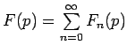
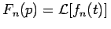

Inhalt Index DeskTop Bronstein

 Integraltransformationen Laplace-Transformation Rücktransformation in den Originalbereich
Integraltransformationen Laplace-Transformation Rücktransformation in den Originalbereich


Um f(t) aus F(p) zu gewinnen, versucht man bisweilen, F(p) in eine Reihe  zu entwickeln, deren Glieder Fn(p) bekannte Bildfunktionen sind, d.h. .